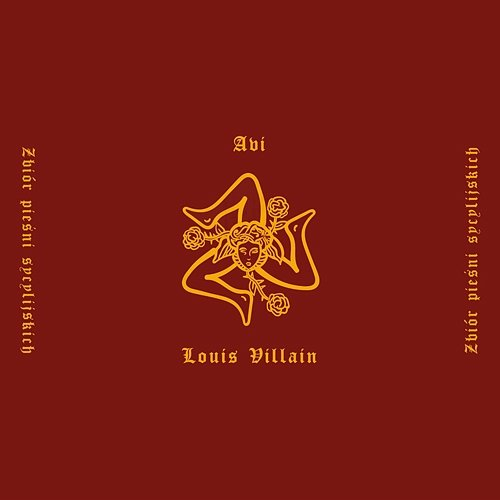

Inny niż oni
Song by Avi
Orginal video

Nie czuję się Malik, już bardziej jak Nietzsche
Powiedz coś mądrego, to może cię zaliczę
Ten wąs to nie PR
Na ulicy za to, to byś pewnie dostał w ryja
Był taki malarz Salvador Dali
Powiedz swoim ziomkom, żeby se wygooglowali
Taka ludzka natura
Nie mogą podciąć skrzydeł, więc wyrywają pióra
Boli, że tak pewnie se idę
Ty, zamknij pizdę albo umyj lactacydem
Założę dres i garnitur
Tu liczy się tekst i nawijka do bitu
Rzuć rap, teraz jest okazja
Kto będzie cię słuchać jak znikną gimnazja
Inny niż oni
Inny niż oni
Inny niż oni
Inny niż oni
Nazywam się Avi, zapamiętaj pseudonim
Kochaj lub nienawidź, bo inny niż oni
Chcieliby, żebym przegrał
Moja broń to słowa, przebijają kevlar
Sięgam po długopis
Z rapem pójdę wszędzie, tylko nie na kompromis
Po mojemu od początku do końca
Nawet jak niedobrze, to się kurwa nie wtrącaj
I przekaż to tamtej suce
Poszedłem w swoją stronę, już nigdy nie wrócę
Poznałem kilka innych po drodze
Związki to nie dla mnie, ja wpadam i wychodzę
Jest dobrze, mam taką czutkę
Jak dojdę na szczyt, to ci wyślę pocztówkę
Tu doceniają po śmierci
Rap miałem we krwi, autopsja potwierdzi
Inny niż oni
Inny niż oni
Inny niż oni
Inny niż oni